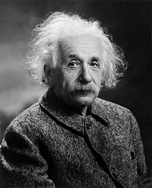

Born in Ulm
Albert Einstein was born on March 14, 1879, in Ulm, Germany.
1879 — 1955
A curious mind that transformed our understanding of space, time, gravity, and the universe.
Explore His Story ↓
Albert Einstein was born in 1879 in Ulm, Germany. From an early age, he developed a strong interest in mathematics and science. His habit of questioning established ideas became an important part of the way he approached scientific problems throughout his life.
Einstein studied at the Swiss Federal Polytechnic in Zurich and later worked at the Swiss Patent Office in Bern. While working there, he continued developing his own scientific ideas. In 1905, he published several important papers that addressed major questions in physics.
His theory of special relativity changed the way scientists understood space and time. Einstein later developed general relativity, providing a new description of gravity in which matter and energy influence the geometry of spacetime.
In 1921, Einstein received the Nobel Prize in Physics for his explanation of the photoelectric effect. He also became an influential public figure who spoke about education, peace, human rights, and the responsibilities of scientists.
From a young student fascinated by science to one of the most influential physicists in history.
Albert Einstein was born on March 14, 1879, in Ulm, Germany.
Einstein began studying mathematics and physics at the Swiss Federal Polytechnic in Zurich.
Einstein published four influential papers dealing with the photoelectric effect, Brownian motion, special relativity, and mass-energy equivalence.
Einstein presented his general theory of relativity, introducing a revolutionary description of gravity.
Einstein was awarded the Nobel Prize in Physics for his work explaining the photoelectric effect.
Einstein died on April 18, 1955, leaving a lasting influence on physics and scientific thought.
The important thing is not to stop questioning. Curiosity has its own reason for existing.
Einstein's influence extends far beyond the equations associated with his name. His theories transformed modern physics, while his willingness to question assumptions continues to inspire scientists, students, and thinkers around the world.